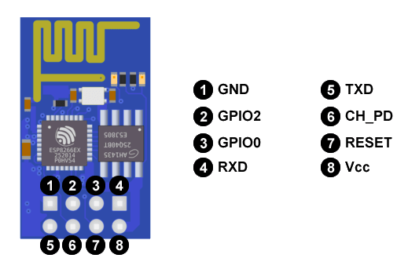

En este tema, conoceremos el módulo WiFi ESP8266, uno de los adaptadores WiFi más populares del mercado.
(1) x Placa Arduino
(1) x Módulo ESP-01 (con Chip ESP8266)
(x) x M H cables (cables de macho a hembra)
(x) x M M cables (cables de macho a macho)
(3) x Resistencias
EL ESP8266 es un chip que gracias a la comunidad, sus características y un gran precio ha logrado convertirse en uno de los adaptadores WiFi más populares, y es que este chip alberga gran potencia en un pequeño tamaño.
Se trata de un chip integrado con conexión WiFi y compatible con el protocolo TCP/IP. El objetivo principal
es dar acceso a cualquier microcontrolador a una red.
La gran ventaja del ESP8266 es su bajo consumo. Es el producto ideal para wereables y dispositivos del IoT.
El Internet de las cosas (IoT) describe la red de objetos físicos ("cosas") que llevan incorporados sensores, software y otras tecnologías con el fin de conectarse e intercambiar datos con otros dispositivos y sistemas a través de Internet.
Existen diferentes modelos de la serie ESP para diferentes usos. A parte han ido surgiendo diferentes placas que incorporan algún módulo ESP como el NodeMCU.
Aquí os mostramos algunos de ellos.
Se trata del módulo más popular aunque en muchas ocasiones, no es el más conveniente.
El módulo ESP-01 tiene un precio muy reducido y en la actualidad, es uno de los más utilizados.
Tiene disponible dos pines GPIO digitales para controlar sensores y actuadores.
GPIO (General Purpose Input/Output, Entrada/Salida de Propósito General) es un pin genérico en un chip, cuyo comportamiento (incluyendo si es un pin de entrada o salida) se puede controlar (programar) por el usuario en tiempo de ejecución.
También se puede llegar a utilizar para este uso los pines Rx y Tx si no se utilizan para la comunicación a
través del puerto serie.
Este será el módulo que utilicemos en nuestro ejemplo.

Se puede programar a través de un adaptador serie/USB o con el cableado adecuado, a través de Arduino. Los
conectores que vienen por defecto, no permiten conectarlo a la protoboard.
Esto dificulta prototipar con este módulo. Sin embargo, podemos utilizar unos conectores en forma de L para
conectarlo a la placa de prototipado. Lo podemos usar como un dispositivo autónomo o como complemento con
Arduino.
Quizás sea el módulo más simple de toda la gama. Está destinado a ser un Shield WiFi para Arduino. La disposición de los pines nos permiten un fácil conexionado con la protoboard. Por el contrario no dispone de ningún puerto GPIO accesible.
El shield Wifi de Arduino te permite conectar una placa Arduino a Internet a través del Wifi.
Este módulo se está convirtiendo en el buque insignia de la empresa.
Permite hacer bastantes más cosas que los módulos anteriores. Lo puedes conseguir por un precio muy reducido.
Tenemos acceso a 11 puertos GPIO de los cuales uno, es analógico con una resolución de 10-bit (1024 valores
posibles).
La configuración en modo dormido es muy sencilla. Esto nos permitirá ahorrar mucha energía. Por el
contrario, la conexión con la protoboard no es muy amigable. Necesitamos soldar los pines o añadirle un
adaptador, aunque también hay que soldarlo. Quizás está sea la mejor opción si queremos hacerlo funcionar de
forma autónoma.
Es el módulo preferido por los Makers para prototipar.
En principio solo podemos acceder a 11 puertos GPIO pero tras unas modificaciones, podríamos acceder a un par
más de ellos.
Lo podemos encajar fácilmente en una protoboard y permite el acople de una antena externa para tener más
alcance.
El NodeMCU es el módulo más característico de este tipo.
A diferencia de los otros módos, viene con todo lo necesario para empezar a trabajar de forma autónoma.
Incluye un adaptador serie/USB y se alimenta a través del microusb. Está basado en el ESP-12.
Lo más interesante de este módulo es que puedes descargar un firmware que te permite programar en lenguajes
como LUA, Python, Basic o JavaScript.
Sin duda alguna este módulo es la mejor opción si queremos adentrarnos en el mundo del ESP8266.
Al usar este módulo, tenemos que tener en cuenta lo siguiente:
- El ESP8266 se alimenta con 3.3V, ¡no usar 5V!
- El ESP8266 NO tiene entradas tolerantes a 5V, así que necesitas convertir el nivel de las entradas
si quieres comunicarte con dispositivos de 5V.
- Durante los periodos de comunicación inalámbrica el ESP8266 puede necesitar hasta 250mA, por lo que
sin una buena fuente de alimentación el ESP8266 se puede resetear. Si este es el caso utilizar un
capacitor en las entradas de alimentación o una fuente de mayor potencia.

Vamos a realizar el mismo ejemplo con los tres módulos.
Una vez efectuado todo el cableado, descargaremos el script del siguiente
enlace y lo cargaremos como hemos
aprendido.
En el ejemplo vemos cómo al accionar cada uno de los módulos de interruptor, nuestro led de la placa se
enciende.
Para nuestro reto, lo que vamos a simular es un cofre que se abrirá con una contraseña.

Esta contraseña la introduciremos mediante golpecitos en la mesa. Al generar la secuencia correcta de golpes,
nuestro cofre se abrirá.
El cofre podemos simularlo con un motor o servo que girará hacia un sentido, esperará un tiempo y volverá
a girar en sentido contrario hasta la posición inicial. Podemos elegir el módulo que mejor se adapte al reto
de los tres vistos.